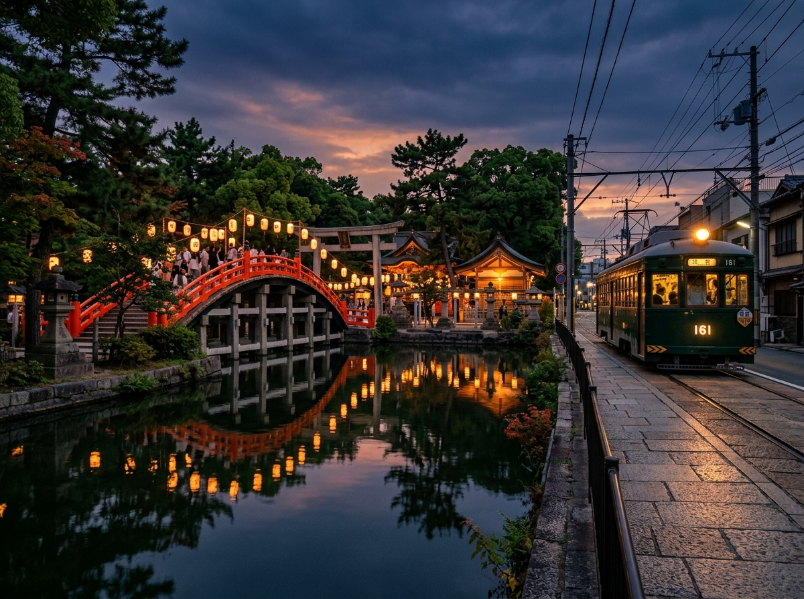
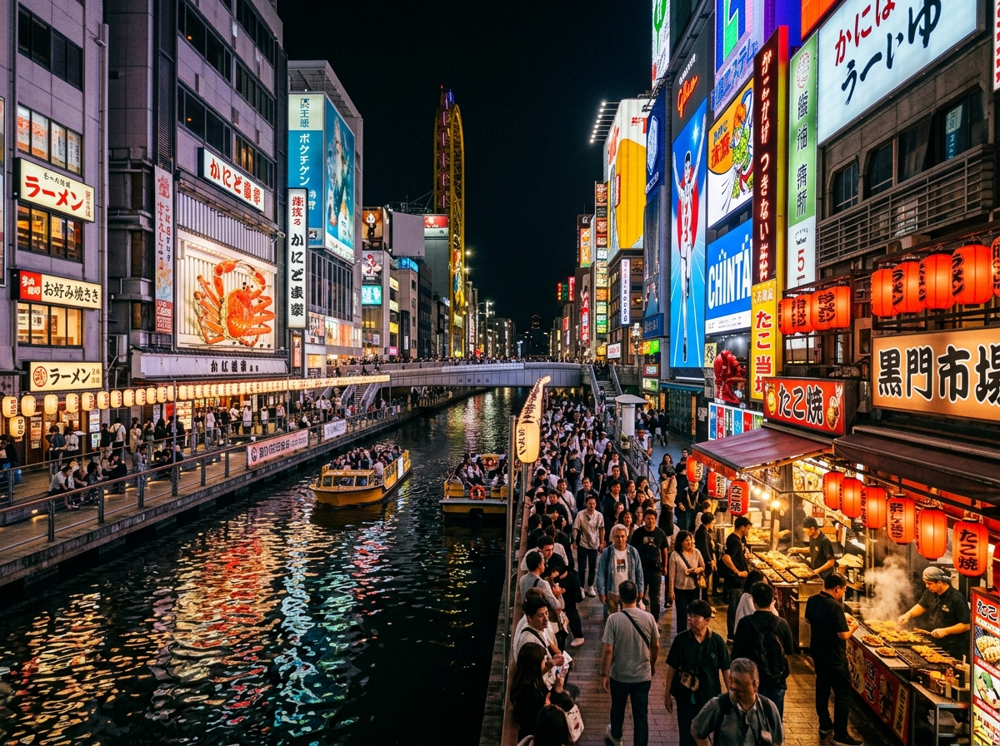
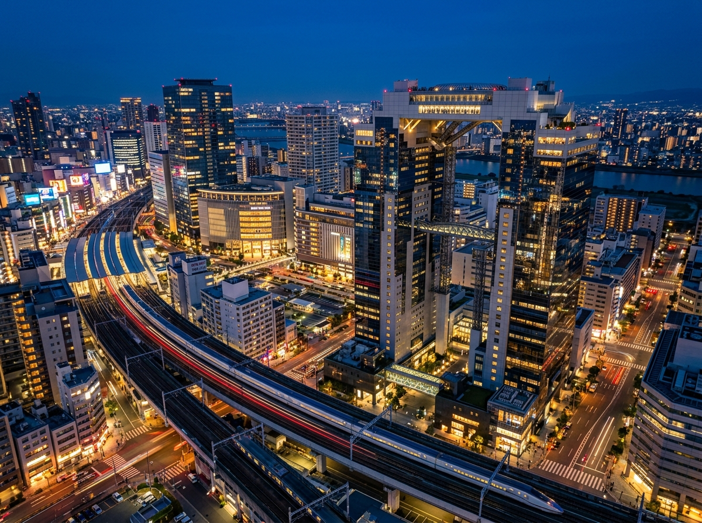
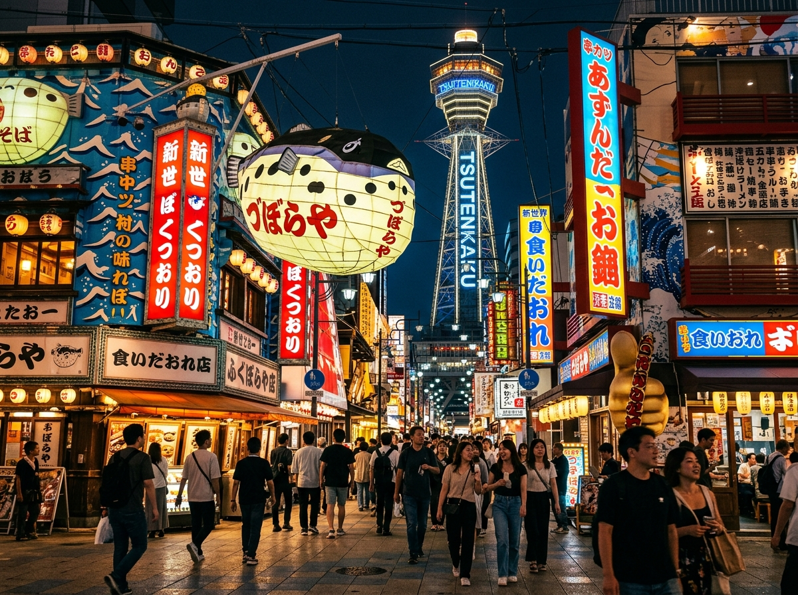

M13
JR
新大阪 (新幹線)Shin-Osaka (Shinkansen)
M16
JR
梅田・大阪駅Umeda / Osaka
Y13
M18
C16
本町 (中央線乗換)Hommachi
NK01
Y15
M20
なんば (難波)NAMBA (Direct 10 min)
M23
HN01
JR
天王寺 / 天王寺駅前
Tennoji / Tennoji-ekimae
NK05
天下茶屋 (急行⇔普通 乗換)Tengachaya (Transfer Hub)
Y19
玉出駅 (徒歩11分)Tamade (Exit 5 / 11 min walk)
🛗 EV有
NK07
HN61
粉浜駅 / 東粉浜 (徒歩7分)
Kohama (NK07) / Higashi-Kohama (HN61) · 7 min walk
普通のみ Local Only
🛗 EV有
NK08
HN12
住吉大社駅 / 住吉鳥居前 (徒歩5分)
Sumiyoshitaisha (NK08) / Torii-mae (HN12) · 5 min walk
普通のみ Local Only
🛗 EV有
✈️ 関西空港(KIX)へのアクセス / To Kansai Airport (KIX):
住吉大社駅から普通列車で天下茶屋へ。天下茶屋で空港急行に乗換！
👉 Take a local train to Tengachaya (NK05), then transfer to an Airport Express.
🏠HOUSE
📍 YOUR STAY / 当施設
Vollmond Suminoe
フォルモント住之江 101
① 南海本線 Nankai Line住吉大社(NK08)・粉浜(NK07) ※普通のみ 🛗EV有
徒歩 5〜7分5–7 min walk
② 阪堺電車 Hankai Tram 🚋住吉鳥居前(HN12)→天王寺駅前(HN01) / 東粉浜(HN61)
徒歩 5〜7分5–7 min walk
③ 地下鉄 四つ橋線 Yotsubashi玉出駅(Y19) 西梅田・四ツ橋・難波へ直通 🛗EV有
徒歩 11分11 min walk

⛩️ 徒歩5分 / 5 min
住吉大社・路面電車
Sumiyoshi Taisha
住吉大社 / 스미요시 타이샤
🚶 施設から徒歩 5分 (5 min walk)

⚡ 直通 DIRECT
⏱ 10 min
Namba難波・黒門
道頓堀・黒門市場 / 도톤보리
Kaiyukan海遊館
大阪港駅 (C11) / 해유관

⚡ 直通 DIRECT
⏱ 22 min
Umeda梅田・大阪
四つ橋線で西梅田へ直通1本！
⏱ 60 min
Kyoto京都
金閣寺・伏見稲荷 / 교토 (JR・京阪)
Osaka Castle大阪城公園
大阪城天守阁 / 오사카성 공원

🚋 路面電車・南海
⏱ 18 min
Tsutenkaku通天閣・天王寺
※天王寺駅前(HN01)へは住吉鳥居前(HN12)から直通
Nara奈良公園
難波・天王寺から近鉄/JR (Kintetsu / JR)
✈️
関西国際空港 Kansai Airport (KIX)
⏱ 約45分 (45 min) | 南海空港線 (天下茶屋 NK05 乗換)
✈️
大阪空港 Osaka Airport (ITM)
⏱ 約55分 (55 min) | 伊丹空港 (梅田経由)